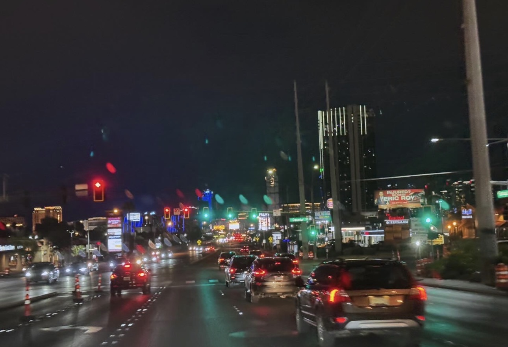
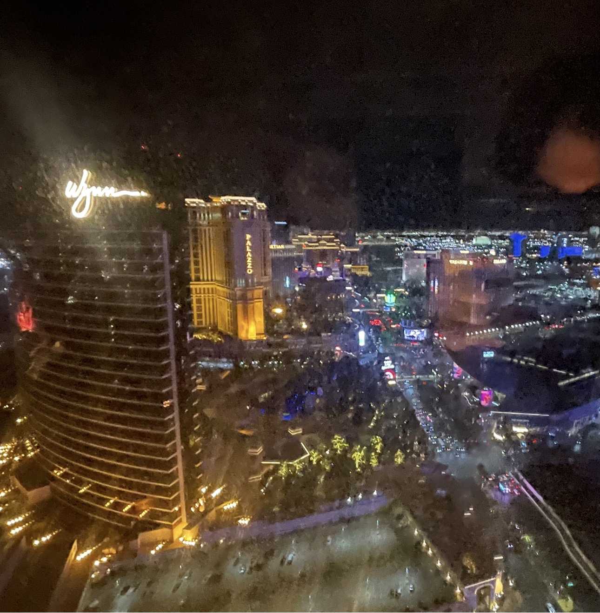

Made with Copilot for text and Myself with photos


Urban city living has a certain energy that you feel the moment you step outside. The streets are always moving, whether it’s people heading to work, buses rolling by, or the sound of traffic echoing between tall buildings. Living in the city means being surrounded by places to go and things to do. Coffee shops, restaurants, stores, and parks are all close enough that you can walk or take a quick ride to get there. Even simple routines like grabbing breakfast or running errands feel different because everything is happening around you at once. The city has a rhythm that becomes part of your daily life, and you start to notice how each neighborhood has its own personality and pace.
At the same time, urban living also has quieter moments that make the experience feel balanced. There are evenings when the sun sets behind the buildings and the whole skyline lights up, creating a view that makes you stop and take it in. You might hear music from a nearby rooftop or see people walking their dogs after work. Late at night, the city feels different, almost peaceful, with fewer cars and a softer glow from the streetlights. Living in the city teaches you how to find calm in the middle of all the activity. It becomes a place where you can explore, meet new people, and feel connected to everything happening around you while still carving out your own space within it.
Living in the city also changes the way you see everyday life. You start to appreciate small details that you might overlook in quieter places. The way people gather at bus stops in the morning, the smell of food coming from street vendors, and the sound of conversations echoing from open storefronts all become part of your routine. There are moments when you notice how different groups of people share the same space, each with their own story and destination. You might pass someone heading to work, someone meeting friends, or someone simply enjoying a walk. The city becomes a place where you feel connected to a larger community, even if you do not know everyone personally. It teaches you how to navigate busy environments, stay aware of your surroundings, and find comfort in the constant movement that defines urban life.